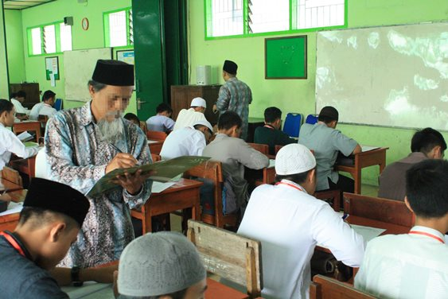

Kebahagian orang tua mendidik buah hati di Pondok Pesantren
السلام عليكم ورحمة الله وبركاته الحمد لله رب العالمين والصلاة والسلام على أشرف الأنبياء والمرسلين نبينا محمد وعلى آله وصحبه ومن سار على نهجه واستن بسنته إلى يوم الدين، وبعد…
Air mata bahagia tanpa terasa menetes membasahi pipi, haru bercampur bahagia tatkala kami membaca sekaligus mendengar tentang berita diterimanya alumni Pesantren Islam Al-Irsyad untuk berkesempatan mengenyam indahnya belajar di Jamiah Islamiyah Madinah, tak kurang dari 37 alumni kami yang diterima. Tentu kalimat yang spontan terucap : MasyaAllah…. Tabarakallah.. Allahu Akbar.. الحمد لله الذي بنعمته تتم الصالحات Segala puji hanya milik Allah, yang dengan nikmatNya menjadi sempurna seluruh amal kebaikan.
Penantian yang cukup panjang bagi seorang lulusan pesantren. Ada rasa harap bercampur cemas, harapan untuk dapat diterima, namun kecemasan tidak bisa disembunyikan tatkala nama tak kunjung muncul di halaman pengumuman. Kami, mewakili segenap civitas dan keluarga besar Pesantren Islam Al-Irsyad Tengaran dengan bangga turut mengucapkan selamat, Barakallahu Fikum untuk seluruh anak-anak kami alumni Pesantren Islam Al Irsyad yang tahun ini mereka telah dinyatakan diterima di Jamiah Islamiyah Madinah. Jujur kami haru sekaligus bahagia mendengar kabar ini.
Kami mewasiatkan kepada segenap alumni Pesantren Islam Al-Irsyad yang telah resmi diterima di UIM : Awali dengan menyucap syukur alhamdulillah atas munculnya berita ini. Karena ini semua adalah nikmat dari Allah. Sadari bahwa ini adalah karunia ilahi nikmat yang wajib disyukuri untuk menguji kita, akankah bersyukur atau kufur. هذا من فضل ربي ليبلوني أأشكر أم أكفر Ini adalah sebagian dari karunia/anugerah yang Allah berikan kepadaku, untuk mengujiku akankah aku bersyukur atau kufur (mengingkari) Sadari bahwa Allah telah memilih antum dari sekian banyak anak anak indonesia yang diberi kesempatan untuk belajar di UIM, ini berarti amanah sekaligus kepercayaan yang wajib disyukuri sekaligus dijaga. Antum akan duduk menikmati indahnya belajar di kota Nabi, tempat yang sangat istimewa dan mulia, belajar dikampus ternama yang menjadi rebutan setiap insan beriman dipenjuru dunia ini.
Manfaatkan waktu yang diberikan untuk belajar di UIM dengan sebaik-baiknya, jangan disia-siakan atau diabaikan, duduklah bermulazamah di majlis ulama kota nabi, dan gunakan kesempatan untuk bisa sholat dimasjid nabawi serta duduk di majlis para ulama pewaris para nabi Jangan dikira bahwa ketika di kota nabi tidak ada godaan duniawi dan fitnah syubuhat serta syahawat, semua itu akan antum hadapi, sehingga perbanyak doa dan mencari teman yang baik dan shalih. Ingat bahwa tempat yang baik tidak bisa secara otomatis membuat orang yang datang menjadi baik, justru amal shalih kitalah yang akan memperbaiki jati diri kita. الأرض لا تقدس أهلها إنما يقدس المرء عمله Banyak berdoa agar diberi keistiqamahan dalam mengemban amanah Jangan lupa doakan pula teman-teman yang belum senasib seperti antum, agar kelak Allah berikan kepada mereka kesempatan yang sama. Jangan pernah bosan untuk meminta doa dan keridhaan kedua orang tua, ingat bahwa doa mereka berdua selalu terucap untuk ananda disetiap waktu dan kala mereka bermunajat kepada Rabbnya, jabat tangan mereka berdua, cium tangan dan keningnya seraya ucapkan terima kasih yang tak terhingga serta janji untuk selalu menjadi anak yang berbakti. Bila ternyata mereka berdua telah tiada, maka sempatkan untuk ziarahi kuburnya dan senantiasa mendoakan mereka berdua atau salah satunya dengan memohonkan ampunan dan rahmatNya.
Kebahagian Orang Tua terhadap anaknya yang sekolah di Pondok Pesantren.
Anak-anakku… tidak ada kebahagiaan yang selalu menjadi harapan kedua orang tua kita, selain mereka bisa melihat anak anaknya menjadi anak yang shalih dan shalihah yang tak pernah bosan mendoakan keduanya. Mereka tidak berharap kita hidup kaya raya,sukses didunia usaha, namun hanya kesahalihan yang mereka idamkan. SEMOGA KITA BISA WUJUDKAN INI SEMUA… Selanjutnya, untuk anak-anak kami yang saat ini belum diberi kesempatan untuk duduk belajar dikota nabi. Jangan bersedih dan jangan galau apalagi stres dan depresi. Yakini dan imani bahwa ini takdir ilahi, ini keputusan Allah yang tidak bisa ditawar apalagi diubah. Tempatkan diri untuk selalu bisa menerima keputusan dan takdir Allah yang baik dan yang buruk. والإيمان بالقدر خيره وشره Tidak adanya peluang dan kesempatan ini, bukan berarti Allah marah dan benci kepada kita, namun justru ini wujud cinta Allah kepada ananda, ini ujian, dan yakini bahwa ketika Allah cinta kepada hambaNya, maka Allah akan menguji hambaNya. Jadi ujian ini sebagai bukti cinta Allah kepada kita.
Rasulullah dalam asuhan Ibu kandungnya.
Imani dan yakini bahwa Allah tidak pernah salah dalam memberikan keputusan, segala yang diputuskan pasti yang terbaik bagi hambaNya.
Perbanyak istighfar, dzikir dan tetap eksis serta istiqamah diatas sunnah.
Terus selipkan doa dalam tiap sujud ananda agar Allah berkenan berikan yang terbaik untuk kita.
Tetap ikhlaskan niat untuk menjadi mukmin sejati yang selalu berusaha tegar dalam hadapi ujian dan tantangan.
Tetap kuatkan tujuan untuk terus belajar agama kapan dan dimanapun kita berada.
Kalaupun ditakdirkan belajar dan kuliah ditempat lain selain di UIM, maka bulatkan tekad untuk selalu menjadi pewaris para nabi, sosok dai yang selalu ingin bersinergi dan berkontribusi untuk islam dan muslimin.
Bila masih ada kedua orang tua atau salah satunya,maka manfaatkan untuk selalu bisa berbakti,agar ananda mendapat ridha keduanya, yang ketika mereka ridha kepada anaknya, hal itu menjadi sarana dan faktor datangnya ridha ilahi.
SEMOGA ALLAH SENANTIASA BIMBING KITA KEJALAN YANG LURUS DAN DIRIDHAI..
ربنا آتنا في الدنيا حسنة وفي الآخرة حسنة وقنا عذاب النار
Akhukum wa muhibbukum
Referensi: Rahiqul Makhtum